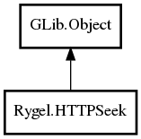

HTTPSeek
Object Hierarchy:

Description:
public abstract class HTTPSeek : Object
HTTPSeek is an abstract representation of a ranged HTTP request.
It can be one of:
Content:
Properties:
- public HTTPSeekType seek_type { protected set; get; }
Identifies whether this is a class Range request or a DLNA-specific
"TimeSeekRange.dlna.org" request.
- public
Message msg { get; }
- public
int64 start { get; }
The start of the range as a number of bytes (classic) or as
microseconds (DLNA-specific). See seek_type.
- public
int64 stop { get; }
The end of the range as a number of bytes (classic) or as microseconds
(DLNA-specific). See seek_type.
- public
int64 step { get; }
Either 1 byte (classic) or as 1000 G_TIME_SPAN_MILLISECOND
microseconds (DLNA-specific). See seek_type.
- public
int64 length { get; }
The length of the range as a number of bytes (classic) or as
microseconds (DLNA-specific). See seek_type.
- public
int64 total_length { get; }
The length of the media file as a number of bytes (classic) or as
microseconds (DLNA-specific). See seek_type.
Creation methods:
- public HTTPSeek (
Message msg, int64 start, int64 stop, int64 step, int64 total_length) throws HTTPSeekError
Methods:
Inherited Members:
All known members inherited from class GLib.Object
- @new
- newv
- new_valist
- get_type
- get_class
- @ref
- unref
- ref_sink
- weak_ref
- weak_unref
- add_weak_pointer
- remove_weak_pointer
- @get
- @set
- get_property
- set_property
- get_data
- set_data
- set_data_full
- steal_data
- get_qdata
- set_qdata
- set_qdata_full
- steal_qdata
- freeze_notify
- thaw_notify
- dispose
- constructed
- notify_property
- connect
- disconnect
- add_toggle_ref
- remove_toggle_ref
- bind_property
- notify
- ref_count